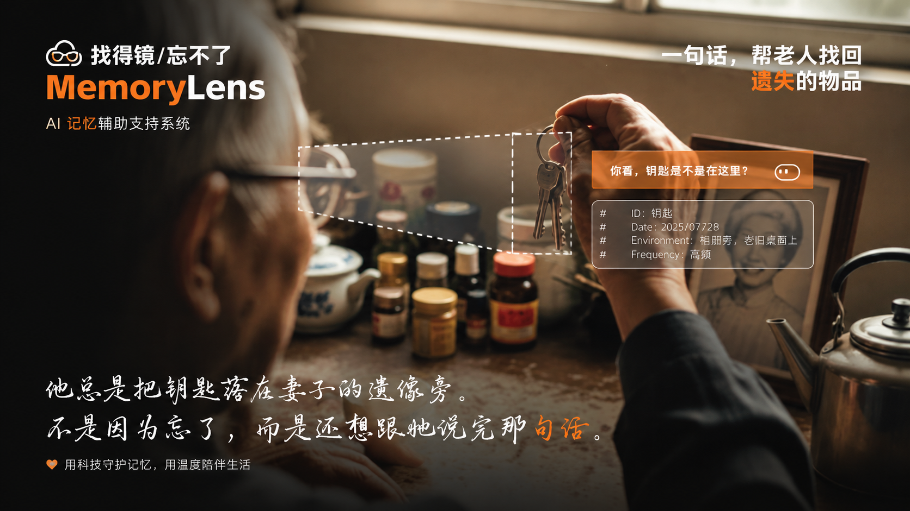
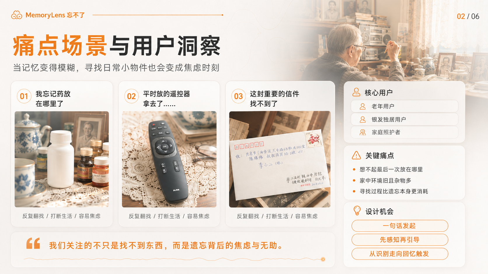
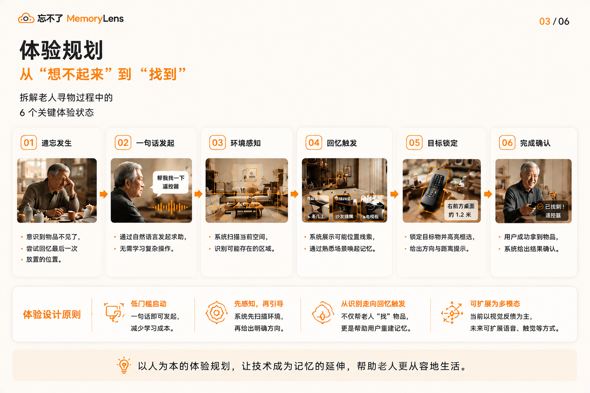
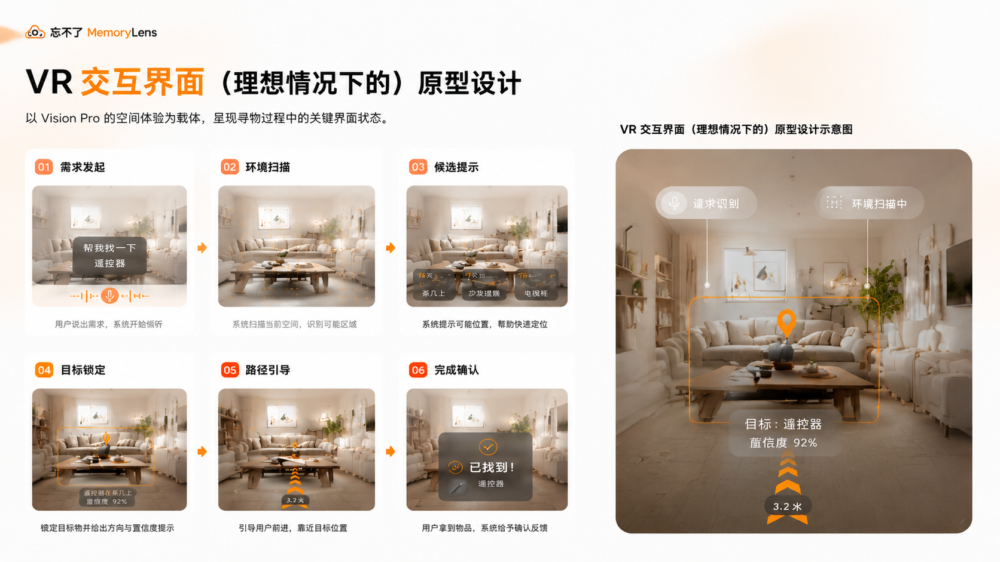
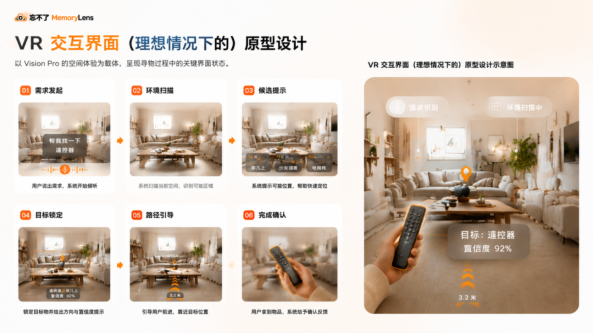

Spatial computing · Vision Pro · 2025.07
MemoryLens
在 Vision Pro 上把找不到的东西指出来：看见、说清方位、在空间里高亮。
黑客松可运行演示 · 非上线产品【背景】2025.07 杭州黑客松。面向会把钥匙、眼镜放在固定位置、过后又找不到的老年人，选 Apple Vision Pro 做载体。
【用户】想用一句话问「我的钥匙在哪」，并立刻在眼前空间里得到指示的人。
【痛点】找不到东西时，聊天窗口回答不了「它在哪」。需要看见目标、听清方位、在空间里被指出来。
【解决措施】把寻物收成一次可走通的反馈：听懂那句话，扫描眼前空间，高亮目标，再用语音把方位说清楚。
【具体解法】反馈分成三层：看见、语音、空间。概念图里的「你看，钥匙是不是在这里」是这条链路的样子，不是已经验证过的用户原话。
时长按案例材料写：黑客松里 48 小时以上做出可运行演示。简历里另有「五天」的写法，这里不合成一个新数字。没有用户测试。多个物体同时出现时，没有方案。
我负责产品体验和前端实现。 用 TRAE 把可交互原型做出来：问句怎么进，高亮出现在哪，方位怎么被说出来。
识别与语言不是我单独做完的算法。 识别接的是 YOLO，语言接的是 Dify 上的工作流。这两段是系统的一部分。
一套可运行的 Vision Pro 演示。不是上线产品，没有投放或使用指标。

概念 空间框、物体信息和一句确认，放在同一张画面里。
识别与反馈 看见、语音、空间三层怎么接在一次寻物上。 界面
问句、高亮和物体信息同时出现。
界面
问句、高亮和物体信息同时出现。
概念和主界面在上面。下面是同一套演示的其余画面，单击放大。





AI 交互要落到一个具体情境里，形成可以执行的下一步，而不是停在聊天窗口。